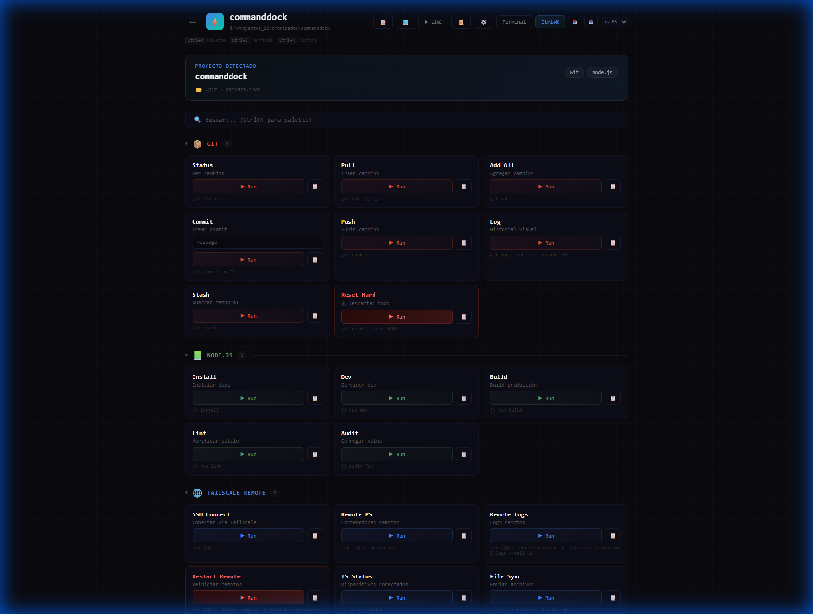

CommandDock
El panel contextual de comandos para desarrolladores. Detecta tu proyecto, muestra los comandos correctos y los ejecuta — todo con un clic.
Electron + React · Windows, macOS y Linux · v1.0.1 Changelog

Repleto de Funciones
Auto-Detección
Escanea tu workspace y detecta Git, Node.js, Docker, Python, Rust, Go, Java, Flutter y más de 20 stacks automáticamente.
Ejecución con un Clic
Ejecuta cualquier comando directo desde el panel. Ejecución real vía child_process de Electron — sin copiar y pegar.
Variables Personalizables
Define {{branch}}, {{host}}, {{user}} y más. Las variables se inyectan en los comandos con vista previa en vivo.
Paleta de Comandos
Presiona Ctrl+K para buscar entre todos los comandos. Encuentra y ejecuta cualquier cosa en menos de un segundo.
Workspace Inteligente
Arrastra y suelta carpetas de proyectos, navega directorios o ingresa rutas manualmente. Re-escanea para detectar nuevos proyectos al instante.
Favoritos y Atajos
Marca tus comandos más usados como favoritos. Ejecútalos al instante con Ctrl+1 hasta Ctrl+9.
Multilingüe
Soporte nativo en español e inglés con cambio instantáneo de idioma. Toda la interfaz completamente traducida.
Exportar / Importar
Respalda toda tu configuración — variables, favoritos, comandos custom — como un archivo JSON. Restaura en cualquier máquina.
Modo Dry Run
Previsualiza comandos sin ejecutarlos. Ve exactamente qué se ejecutaría — perfecto para operaciones peligrosas como git reset.
Cómo Funciona
Instalar
Descarga CommandDock y ejecuta el instalador. Funciona al instante — cero configuración necesaria.
Abrir un Proyecto
Apunta CommandDock a tu workspace. Escanea el directorio y auto-detecta cada proyecto y su stack.
Ejecutar Comandos
Haz clic en ▶ Run en cualquier comando. El output se muestra en la terminal integrada en tiempo real.
Descargar CommandDock
Gratis y open source — elige tu plataforma
Windows
EXE Portable · 92.5 MB
DescargarInstalador Windows
NSIS Setup · 92.7 MB
DescargarmacOS
DMG (ARM64) · 108 MB
DescargarLinux
AppImage · 112.8 MB
DescargarTodas las versiones disponibles en GitHub Releases
¿Tienes Ideas?
¡Nos encantaría escuchar tu feedback! Reporta bugs, sugiere funciones o simplemente salúdanos.
Apoya el Desarrollo
CommandDock es completamente gratuito y open source. Si lo encuentras útil, ¡considera invitarnos un café!
¿Listo para potenciar tu flujo de trabajo?
Únete a los desarrolladores que confían en CommandDock para sus tareas diarias de línea de comandos.